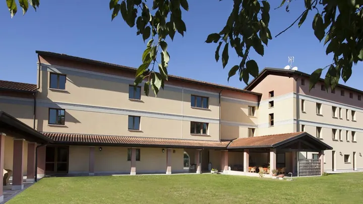

gio 10 dic · dalle 21:00
Gospelive Festival - Rev. Olawale Olashore & The Black Gold Gospel Experience
Rev. Olawale Olashore & The Black Gold Gospel Experience: la forza spirituale del gospel contemporaneo. Un appuntamento imperdibile con la grande musica sacra internazionale si prepara a illuminare il panorama culturale friulano. Il 10 dicembre 2026, il Centro Culturale “Aldo…
 Indicazioni
Indicazioni
- Costi e prenotazioni
- Costo non indicato · Prenotazione non indicata
- Programma
- Programma da verificare. Apri la fonte ufficiale per orari e possibili aggiornamenti.
- In caso di maltempo
- Nessuna indicazione specifica pubblicata.
- Note
- Acquisito automaticamente dalla fonte.
L’EVENTO
Descrizione completa
Rev. Olawale Olashore & The Black Gold Gospel Experience: la forza spirituale del gospel contemporaneo.
Un appuntamento imperdibile con la grande musica sacra internazionale si prepara a illuminare il panorama culturale friulano. Il 10 dicembre, il Centro Culturale “Aldo Moro” di Cordenons ospiterà l’attesissimo concerto di Rev. Olawale Olashore & The Black Gold Gospel Experience. Sotto la guida carismatica e spirituale del Reverendo Olawale Olashore, questo straordinario progetto rappresenta una delle formazioni più intense, autentiche e travolgenti della scena gospel odierna. Composto da un ensemble di eccezionali talenti di origine africana e afroamericana, il gruppo supera il concetto di semplice intrattenimento: la “Black Gold Gospel Experience” offre una vera e propria esperienza immersiva, capace di trasformare la performance in un momento di profonda elevazione spirituale e gioia collettiva attraverso armonie vocali raffinate e una sezione ritmica impeccabile. Il cuore pulsante del loro approccio artistico risiede nella capacità di fondere, in un unico e potente abbraccio, la profondità dei classici spirituals tradizionali con la vibrante energia della lode urbana e del gospel contemporaneo. Grazie al magnetismo e alla dedizione ministeriale del Reverendo Olashore, lo spettacolo diventa un veicolo per diffondere messaggi universali di fede, speranza, inclusività e amore incondizionato. Il repertorio spazia così con naturalezza dai ritmi sincopati e moderni fino alle ballate più intime e toccanti, pensate per azzerare le distanze e parlare direttamente al cuore di ogni spettatore, indipendentemente dalla cultura o provenienza. Applauditi a livello internazionale dal pubblico e dalla critica, e reduci da trionfali rassegne nelle principali stagioni concertistiche europee, i membri della formazione arrivano a Cordenons nel pieno del loro tour invernale. Rev. Olawale Olashore & The Black Gold Gospel Experience sono pronti a travolgere la platea con la loro inarrestabile onda di pathos e armonia, dimostrando ancora una volta come la musica gospel sia il linguaggio universale perfetto per abbattere ogni barriera e celebrare la vita. Durante la serata saranno raccolte offerte libere per sostenere i progetti della S.C. Pediatria e della Neonatologia di Pordenone
Info e biglietti su: http://gospelivefestival.com/.../giovedi-10-dicembre-2026/
Contatto: info@gospelivefestival.com
IL PROGRAMMA
Programma e orari
Appuntamenti raccolti dalle fonti elencate. Dove manca un orario, non è ancora disponibile in questa scheda.
Programma pubblicato
- Dal 2026-12-10 al 2026-12-10
INFORMAZIONI UTILI
Prima di partire
- Controllare la fonte prima di partire.
ORGANIZZAZIONE